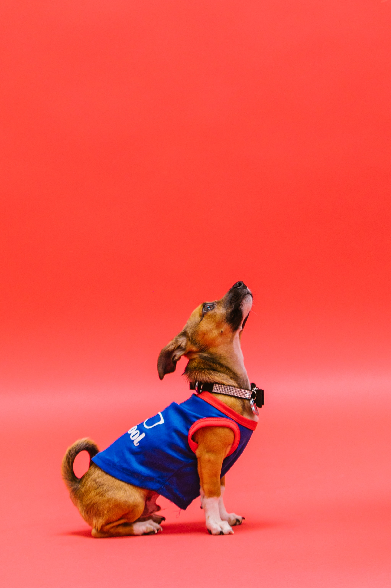

Räddningshunden Claes
Välkommen till räddningshunden Claes profilsida!
Det här är räddningshunden Claes. Han är en 4 år gammal superhjälte i form av en Jack Russellhane. Claes har jobbat som spårnings- och räddningshund i 2 år. På sidan Om Claes kan du läsa mer om vilka uppdrag Claes haft samt se en lista med hans favoritmat.
Vad gör en räddningshund?Artikel om Claes räddningskollega Salt i Aftonbladet